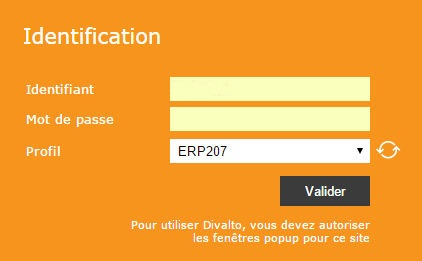

Pour se connecter à un serveur de clients légers Web, l'utilisateur doit spécifier une url de la forme :
Http://nom_du_serveur/nom_du_site_web[/ia.aspx]
nom_du_serveur est le nom du serveur Web hébergeant les applications Harmony.
Par exemple : monserveur.fr.
nom_du_site_web est le nom du site Web configuré dans IIS.
Par défaut, ce nom est lcweb (mais il peut être modifié, en particulier en cas de cohabitation de plusieurs sites Web sur un même serveur).
Le nom du document à charger est obligatoirement ia.aspx.
Toutefois, sa mention est facultative à partir du moment où ce document a été défini comme document à envoyer par défaut pour ce site.
Cette url affiche la page d’identification de l’utilisateur :

L'utilisateur doit indiquer son code utilisateur Windows (*) suivi, si nécessaire, du nom du domaine précédé du caractère @ (par exemple : utilisateur1@mondomaine.dmz) puis saisir son mot de passe. De plus :
S'il s'agit de la première connexion, l'utilisateur doit, AVANT de valider, récupérer la liste des profils utilisateur par le bouton Rafraîchir et choisir le profil correspondant à son compte d’utilisateur Windows.
Le profil de l’utilisateur est conservé sur le client. Pour les connexions suivantes, il n’est donc plus nécessaire de récupérer la liste des profils (sauf, bien entendu, en cas de modification côté serveur).
Après validation, l'interface d'accueil est affichée.
(*) Rappelons qu'en client léger Web, le compte utilisateur "Divalto" est obligatoirement le compte Windows ayant servi à la connexion.